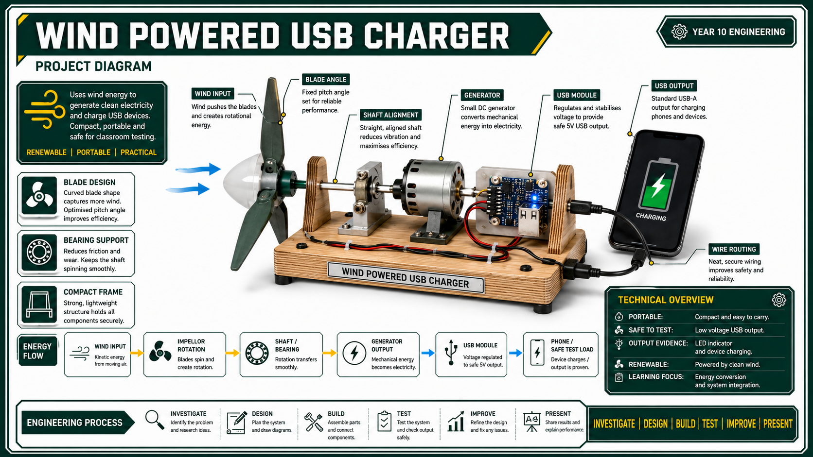

Energy Chain
Wind energy moves the impellor, the shaft transfers rotation, the generator converts movement into electricity, and the USB module provides a usable output.
Renewables, wind energy, energy storage and impacts

This toolkit sets up the reason for the project: using wind as an energy source, converting motion into electrical output, and judging whether a small renewable-energy prototype is useful, safe and realistic.
Wind energy moves the impellor, the shaft transfers rotation, the generator converts movement into electricity, and the USB module provides a usable output.
Output changes with wind speed, blade angle, friction, alignment, generator load and storage. Renewable does not mean unlimited.
| Concept | What students need to know |
|---|---|
| Renewable energy | Energy from sources that can be naturally replenished, including wind, solar, hydro, geothermal and biomass. |
| Wind generation | Moving air turns blades or an impellor, which rotates a shaft connected to a generator. |
| Energy storage | Batteries or power banks can store energy, but storage adds cost, losses, safety checks and charging limits. |
| Environmental impact | Renewables reduce fossil-fuel use, but still involve materials, manufacturing, land use, maintenance and end-of-life waste. |
The Drive material for this unit is not a finished scope and sequence. The teaching path has been built from the master folio, the Alternate Energy assessment task, the Alternative Energy question set, the assignment template and the student evidence folder.
| Source evidence | What this toolkit must teach |
|---|---|
| Alternative Energy overview | Alternative energy, renewable/non-renewable energy, wind turbine operation, energy efficiency, storage, smart grids and environmental impacts. |
| Assessment Task 2 | Wind generator phone charger, solar/alternate energy context, gears/cogs, WHS, resources, terminology, social and environmental implications, design process. |
| Master folio | Research section requires completed Compare Alternate Energies and Energy Production Costing sheets before concept design. |
| Assignment template | Solar cells, Ohm's law, battery storage, energy-efficient transport, lithium mining, blade/panel materials, strength, weight, efficiency and recyclability. |
| Stage 5 outcomes | IND5-1 to IND5-10 plus EGT5-SAF, ENV, COM, GRP, EVL, MEA, USE and IVT links through WHS, research, communication, testing and sustainability. |
Alternative energy is energy produced using sources other than conventional fossil fuels. In this unit, the useful classroom question is not simply whether wind power is good or bad. The engineering question is: can a small wind-powered system produce useful electrical output safely, reliably and with sensible material choices?
Renewable sources such as wind, solar, hydro, geothermal, biomass, tidal and wave energy are replenished naturally. Non-renewable sources such as coal, oil, gas and uranium are finite or require long geological timescales to replace. The difference matters because engineers need to design systems that respond to real limits: fuel availability, emissions, cost, reliability, land use, storage and end-of-life waste.
The phone charger prototype is a small energy-conversion system. It does not create energy; it changes energy from one form into another. Students should use the correct chain in their folio:
| System part | What it does | What can go wrong |
|---|---|---|
| Impellor / wind catcher | Captures wind energy and starts rotation. | Too heavy, poor blade angle, unbalanced or too small to catch enough air. |
| Shaft | Transfers rotation to the generator. | Bends, slips, wobbles, rubs on supports or fails to align with the generator. |
| Generator | Converts rotation into electrical output. | Spins too slowly, has too much load, is poorly mounted or has loose wires. |
| USB module | Provides a usable low-voltage output point. | Incorrect polarity, unstable voltage or unsafe connection to a device. |
Wind speed has a large effect on performance. Faster wind usually gives more available energy, but classroom models also reach practical limits. If the impellor is poorly balanced or the frame is weak, more wind may make the model less reliable rather than more useful.
Efficiency means how much useful output is gained compared with the input available. A classroom charger loses energy through blade slip, friction, shaft wobble, gear friction, generator resistance, heat, vibration and poor electrical regulation. Students do not need advanced maths for this unit, but they should understand that every transfer wastes some energy.
The Drive theory material asks students to think beyond the spinning model. Renewable energy is often intermittent, meaning output changes with conditions. Wind systems may need batteries, power banks or grid support so energy can be used when wind is low.
Storage improves usefulness but adds engineering responsibilities. Batteries introduce charging limits, polarity checks, heat, degradation, mining impacts and disposal issues. This links directly to the assessment task's societal and environmental implications.
| Issue | Engineering meaning | Folio link |
|---|---|---|
| Intermittency | Wind output rises and falls, so charging may be unreliable. | Explain why test conditions matter. |
| Storage | Batteries smooth output but add cost, losses and safety checks. | Discuss energy storage in the research/evaluation. |
| Charging infrastructure | Useful chargers need stable voltage, current control and robust connectors. | Compare classroom prototype with real phone charging expectations. |
| Lifecycle impact | Materials, manufacture, transport, maintenance and disposal all matter. | Use sustainability language, not just "renewable is good". |
Higher wind speed can increase generator output, but it also makes the impellor spin faster and can create vibration, loose parts or sudden movement. Testing should be controlled, supervised and recorded so performance improves without creating extra risk.
Moving air turns the impellor. The shaft transfers that rotation to the generator, which converts mechanical energy into electrical energy. The USB module then regulates the output so it can be used for a small low-voltage load or charging circuit.
The comparison explains the purpose of the project. It helps students understand why wind energy is useful, what its limits are, and how environmental benefits still need to be balanced against materials, reliability, manufacturing and end-of-life waste.
A strong folio includes a renewable/non-renewable comparison, an energy-transfer diagram, notes on wind generation, and a short explanation of why wind energy suits this portable charger project while still having limits.
Renewable energy sources can be naturally replenished, but output still depends on conditions such as wind speed and equipment efficiency. The system also uses materials, electronics, manufacturing energy and disposal processes that can affect the environment.
The teacher should check the circuit, polarity, wiring security, USB module, voltage level and stability of the rotating parts. Students should test the output with approved low-voltage equipment before connecting any personal device.
Storage can smooth out changing wind output and allow charging when wind drops. It also adds risks such as incorrect polarity, overcharging, damaged cells and extra wiring faults, so battery use needs teacher-approved components and careful testing.
Early tests reveal whether the impellor spins freely, the generator output is stable and the frame is safe. Rushing to charge a phone can hide faults and risk damaging a device. Good engineering starts with controlled data, not wishful thinking.